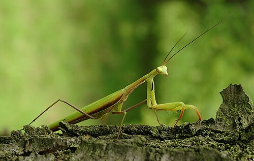
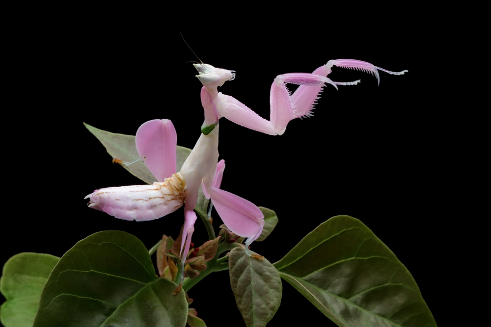
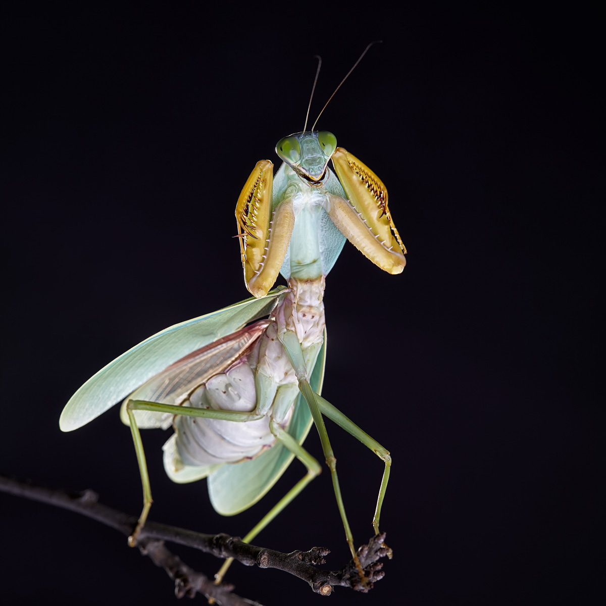
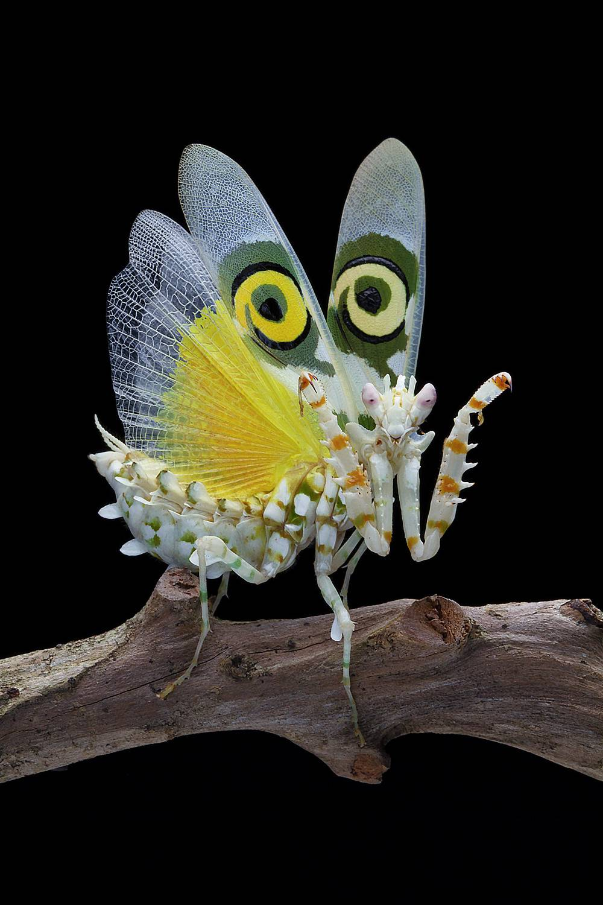
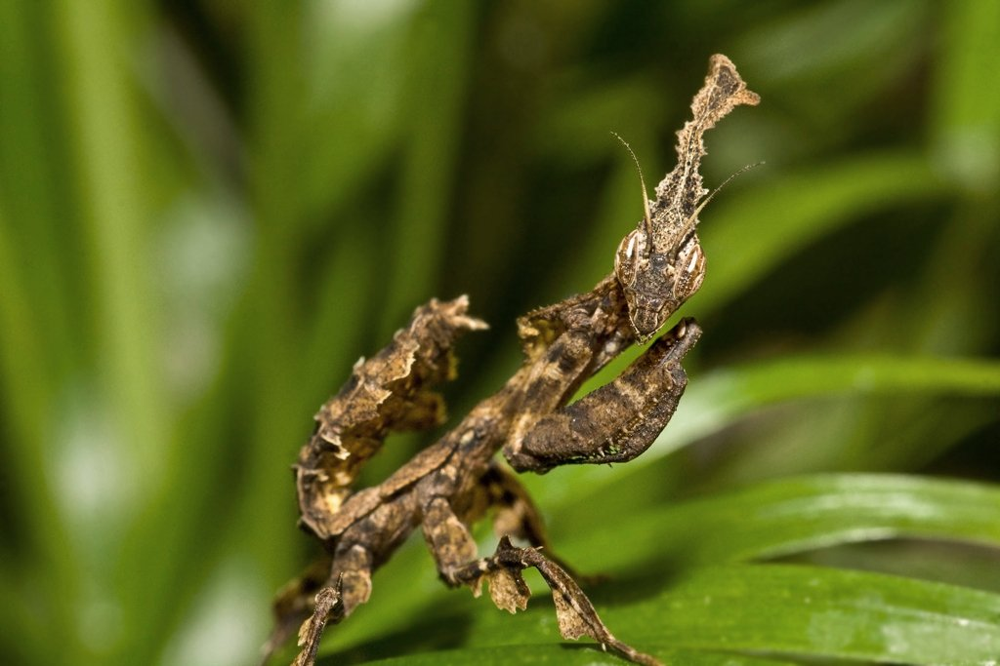
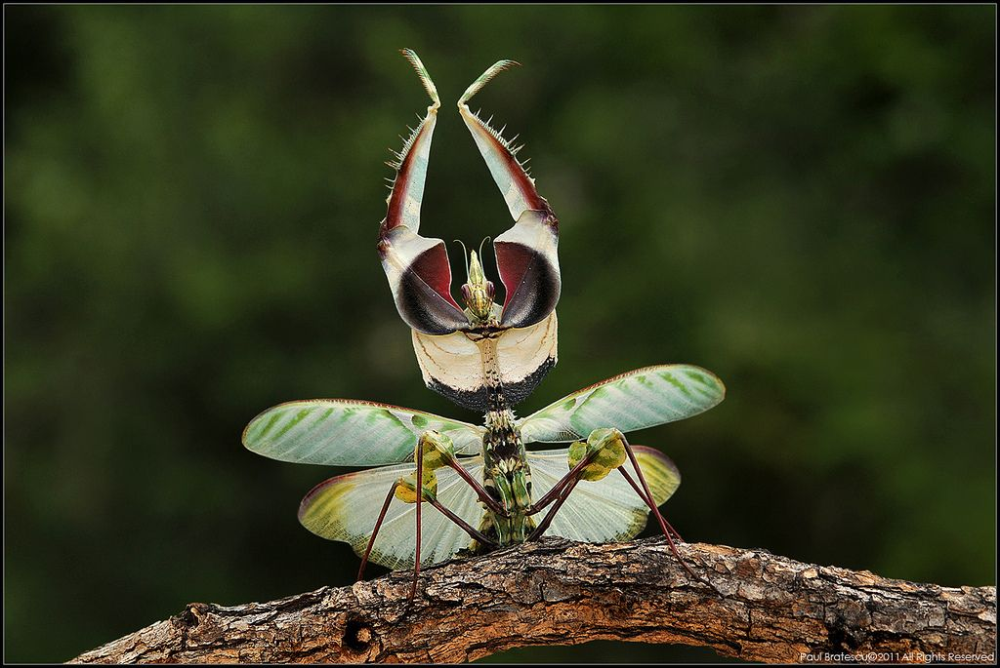

Популярные виды богомолов
Ниже представлены некоторые виды, которые чаще всего содержат в качестве экзотических питомцев.
| Название | Размер | Регион | Сложность содержания |
|---|---|---|---|
| Обыкновенный богомол | 5–7 см | Европа, Азия | Низкая |
| Орхидейный богомол | 4–5 см | Юго-Восточная Азия | Средняя |
| Малазийский богомол-щитоносец | 6–8 см | Малайзия, Индонезия | Низкая |
| Шипастый цветочный богомол | 3–4 см | Восточная и Южная Африка | Высокая |
| Богомол-призрак | 4–5 см | Австралия | Средняя |
| Чёртов цветок | 10–13 см | Восточная Африка | Высокая |
Оценка сложности содержания основана на нескольких критериях: близость условий террариума к привычной среде обитания вида, разнообразие рациона (некоторые виды питаются только летающими насекомыми), требования к температуре и влажности, а также чувствительность к стрессу и качеству воздуха.
Фотографии видов
Несколько примеров внешнего вида разных богомолов.

(Mantis religiosa)

(Hymenopus coronatus)

(Rhombodera basalis)

(Pseudocreobotra wahlbergii)

(Phyllocrania paradoxa)

(Idolomantis diabolica)